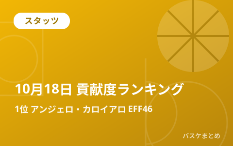

10月18日の貢献度ランキング 1位はアンジェロ・カロイアロ（京都）の46

広告スペース（AdSense）
10月18日に行われたりそなB.LEAGUE PREMIER(Bプレミア)4試合のボックススコアから、貢献度（EFF）の上位選手をまとめました。この日の貢献度1位は京都のアンジェロ・カロイアロで、29得点・7リバウンド・10アシストを記録し、貢献度46をマークしました。
貢献度ランキング TOP10
| 順位 | 選手（チーム） | 貢献度 | 得点 | リバウンド | アシスト | スティール | ブロック | 出場時間 |
|---|---|---|---|---|---|---|---|---|
| 1 | アンジェロ・カロイアロ（京都） | 46 | 29 | 7 | 10 | 0 | 0 | 23分 |
| 2 | アーロン・ホワイト（三河） | 40 | 21 | 14 | 6 | 0 | 1 | 25分 |
| 3 | 富永 啓生（北海道） | 37 | 35 | 3 | 2 | 1 | 1 | 29分 |
| 4 | フィン・ディレイニー（茨城） | 33 | 16 | 14 | 5 | 0 | 0 | 26分 |
| 5 | マイケル・フィリップス（京都） | 31 | 18 | 10 | 2 | 2 | 2 | 22分 |
| 6 | ティム・ソアレス（茨城） | 31 | 16 | 13 | 2 | 1 | 1 | 20分 |
| 7 | ゲイリー・クラーク（北海道） | 29 | 22 | 7 | 3 | 3 | 1 | 28分 |
| 8 | チャールズ・ジャクソン（京都） | 28 | 21 | 9 | 1 | 0 | 0 | 18分 |
| 9 | ジョン・ハーラー（北海道） | 27 | 14 | 8 | 3 | 2 | 1 | 25分 |
| 10 | マイク・コッツァー（横浜BC） | 24 | 19 | 4 | 1 | 3 | 0 | 29分 |
国籍別ランキングは未掲載です。公式国籍情報を確認できない選手を名前から分類しません。
部門別リーダー
| 部門 | 上位3人 |
|---|---|
| 得点 | 富永 啓生（北海道）35、アンジェロ・カロイアロ（京都）29、ゲイリー・クラーク（北海道）22 |
| リバウンド | アーロン・ホワイト（三河）14、フィン・ディレイニー（茨城）14、ティム・ソアレス（茨城）13 |
| アシスト | アンジェロ・カロイアロ（京都）10、澁田 怜音（京都）7、アーロン・ホワイト（三河）6 |
| スティール | ゲイリー・クラーク（北海道）3、マイク・コッツァー（横浜BC）3、長谷川 暢（茨城）3 |
| ブロック | ナシール・リトル（佐賀）3、マイケル・フィリップス（京都）2、アーロン・ホワイト（三河）1 |
この日の試合結果
| 対戦（ホーム vs アウェー） | スコア |
|---|---|
| 茨城 vs 大阪 | 98－63 |
| 横浜BC vs 北海道 | 78－109 |
| 富山 vs 三河 | 56－99 |
| 京都 vs 佐賀 | 115－70 |
Q. 貢献度（EFF）とは？
A. 得点・リバウンド・アシスト・スティール・ブロック・被ファウルを加算し、外したシュート数（フィールドゴール・フリースロー）、ターンオーバー・被ブロック・ファウルを減算した指標です。B.LEAGUE公式記録の値をそのまま掲載しています。公式用語集を参照してください。
出典：B.LEAGUE公式 試合詳細（ボックススコア）
https://www.bleague.jp/game_detail/?ScheduleKey=506473
https://www.bleague.jp/game_detail/?ScheduleKey=506474
https://www.bleague.jp/game_detail/?ScheduleKey=506475
https://www.bleague.jp/game_detail/?ScheduleKey=506476
本記事はB.LEAGUE公式記録を自動集計して作成しています。記録は公式の訂正により変わる場合があります。最新・正確な情報は出典元でご確認ください。
広告スペース（AdSense）